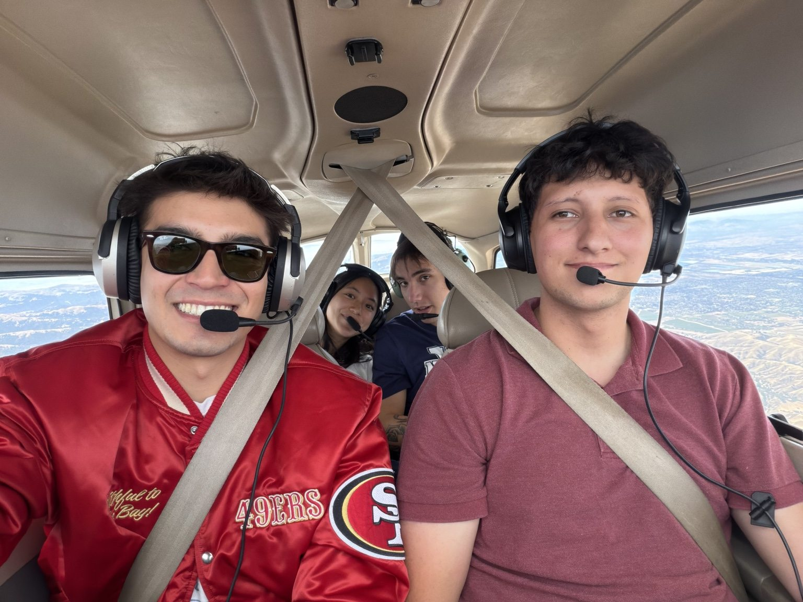
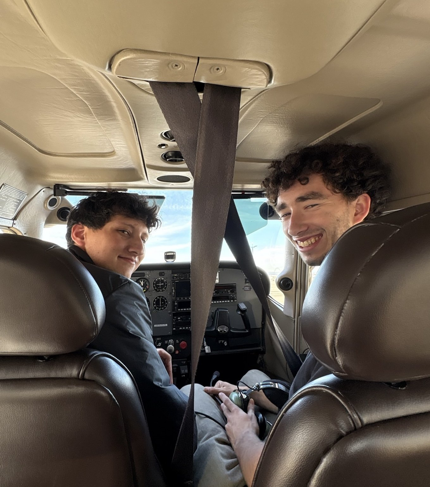

Meet Ben
I've always believed the best way to find purpose is to serve other people. I spent almost a decade in the coffee industry, and what I took from it wasn't just a love of brewing and the science behind coffee. It taught me that my greatest source of fulfillment is working with people and making a real, positive difference in their day. Flight instruction is where that passion found its home in aviation.
My love of flying started in childhood, spending time with my dad at airshows and military aviation museums. That curiosity never faded. Today I hold my commercial pilot certificate, instrument rating, flight instructor certificate, and ground instructor certificates, along with a tailwheel endorsement, and I'm continuing my aerobatic training in a Super Decathlon. Tailwheel and aerobatic flying demand focus, precision, and humility, and they've sharpened my airmanship and commitment to safety more than anything else I've flown.
Eleven years of playing football taught me the foundational lessons of my life: discipline, hard work, and the power of teamwork. The biggest takeaway was learning to understand my role, commit to it fully, and trust the people around me to do the same. I bring that mindset to instruction. Your progress is the goal, and I find more fulfillment in helping others succeed than in any spotlight of my own.
I'll hold you to a high standard, but I'll also be patient, honest, and in your corner every step of the way. I want to give you the best instruction I can, not just to make you a safer and more capable pilot, but to help you love flying as much as I do.
Outside the Cockpit
When I'm not flying, you'll probably find me cafe hopping around the Bay Area, or at my Thursday morning coffee club. I love cooking, movies, watching and talking football, and getting out on the water in Half Moon Bay to surf. Aviation is a community, and I'm always happy to talk about any of it, in the air or on the ground.

